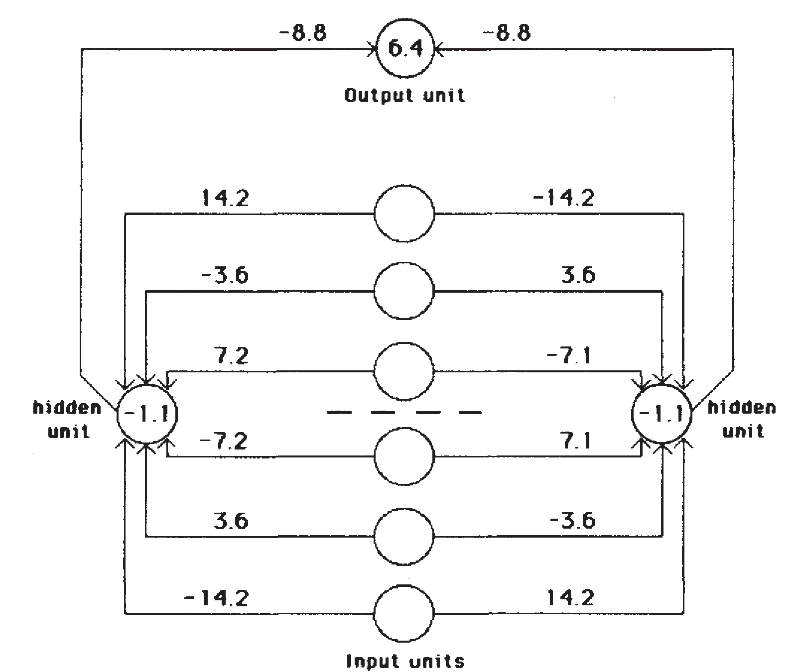
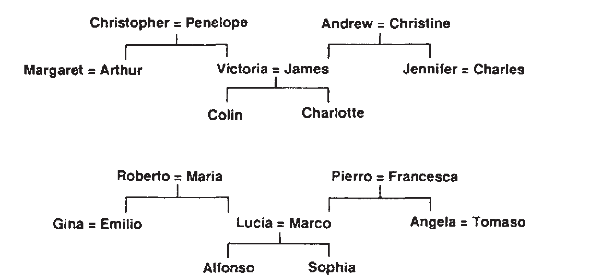
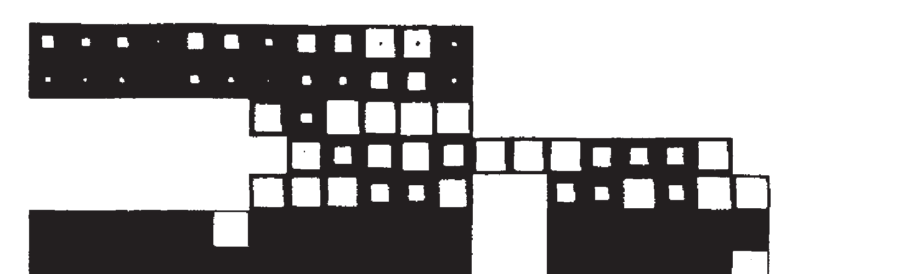
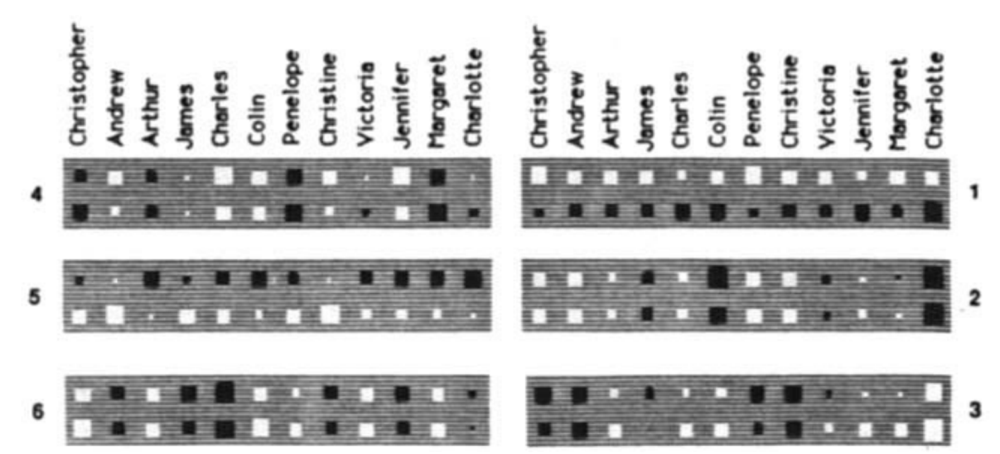
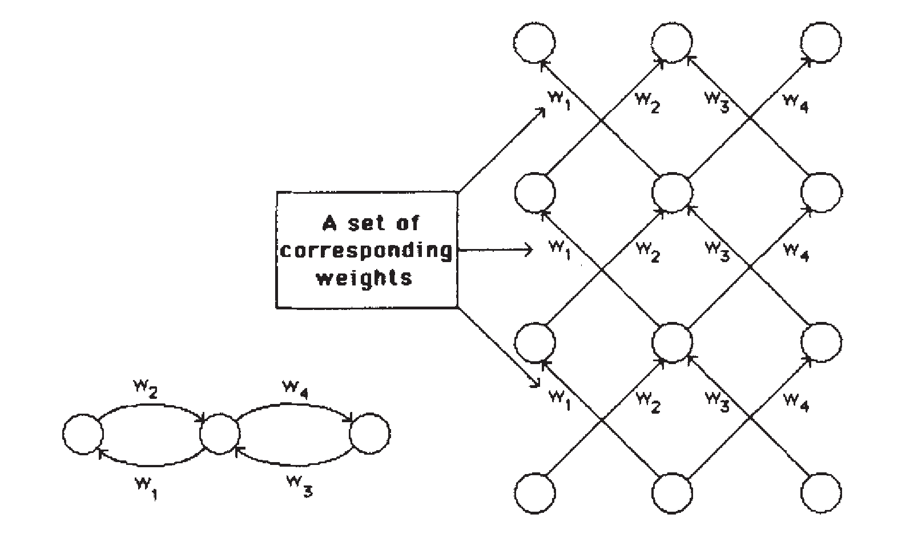

Credit assignment in layered networks
How can a hidden unit learn when nobody tells it the answer?
Back-propagation turns one visible mistake at the output into small, useful adjustments throughout a network. It does not send answers backward; it sends a measurement of how each connection could have changed the error.
Learning representations by back-propagating errors · David E. Rumelhart, Geoffrey E. Hinton & Ronald J. Williams · Nature, 1986
1 · The missing teacher
Outputs get answers. Hidden units do not.
Imagine a mixing desk: several dials jointly produce one sound, and you are told only that the final sound is wrong. Which dial should move, and by how much? A layered neural network has the same problem. A training example supplies a desired output, but it does not supply a desired activation for each hidden unit.
The paper’s move is beautifully local. First record what each unit did in the forward direction. Then, starting from the observable output mistake, use the chain rule to ask how a tiny change to each earlier quantity would alter that mistake. That sensitivity is enough to adjust the weights.
2 · Name the quantities first
A forward pass leaves a trail we can differentiate.
The paper uses sigmoid units. Their bounded output makes the algebra concrete, while the central chain-rule idea applies more broadly to differentiable networks.
| Paper symbol | Meaning | Plain-language job |
|---|---|---|
| yi | Activity sent by unit i | The signal carried along an outgoing connection. |
| wji | Weight from i to j | The adjustable strength of that connection. |
| xj | Total input arriving at j | Weighted evidence before the unit squashes it. |
| dj | Desired output | The teacher’s answer—available only at an output unit. |
| E | Total squared error | The score the training case can actually judge. |
| ε, α | Learning rate, momentum | How far to move now, and how much of the prior move to retain. |
A bias is simply a connection from a unit permanently set to 1. The activation function maps a total input to a value between 0 and 1. This also exposes an important limitation: near 0 or 1, a sigmoid barely changes, so its derivative becomes small.
3 · The return receipt
Every edge needs just two local facts.
How much downstream error reaches this edge? And how active was the signal it carried?
- Forward. Compute weighted totals and activations layer by layer.
- Measure. Compare outputs with desired values: E = ½ Σ(y − d)².
- Start where the teacher exists. At an output, ∂E/∂y = y − d.
- Pass through the activation. For a sigmoid, ∂E/∂x = (y − d)y(1−y).
- Share credit backward. A hidden unit adds every downstream sensitivity weighted by its outgoing edge, then applies its own sigmoid derivative.
4 · Worked trace A
One wrong output, one directly connected weight.
Let one input activity be a=1, its output weight be w=.4, output bias=.1, target d=1, and ε=.1.
The prediction is too low. Because this input was on, increasing its positive weight raises the next output and reduces this case’s error.
Predict before reveal. If this input activity had been 0, would this weight receive a direct update from this one case?
No. The gradient contains the sender’s activity: ∂E/∂w = δa. If a=0, changing this edge could not change the receiving total for this case, so its direct gradient is zero.
5 · Worked trace B
The hidden unit receives responsibility, not a hidden label.
Use one input a=1, input-to-hidden weight u=.2, hidden-to-output weight v=.7, output bias=−.1, and target d=1.
The hidden unit never receives a made-up target such as “you should have been .63.” Instead, its sensitivity is the output mistake, scaled by how strongly it reaches the output (v) and how responsive the hidden sigmoid is (h(1−h)).
At v=.70, the hidden sensitivity is approximately −.0182.
Static reading: holding the forward activations fixed for this small thought experiment, a larger positive outgoing weight gives this hidden unit more leverage over the output error, so |δh| rises. In a real pass, changing v also changes the output activation.
6 · What was learned?
The paper used error signals to form internal representations.
Its examples are small by modern standards, but they make the claim visible: hidden layers can discover useful structure that no individual input bit expresses alone.





7 · Keep the limits attached
A local sensitivity is powerful, not magical.
Not a guarantee
Gradient descent uses local slope. The paper itself notes local minima; back-propagation does not promise the globally best weights.
Saturation can stall learning
When a sigmoid sits near 0 or 1, y(1−y) is small. Deep chains of small derivatives later became a central training difficulty.
Not reverse prediction
Backward quantities are derivatives of the final error. They are neither target labels for each hidden unit nor activations run backwards.
Not a brain model
The authors explicitly say the procedure, in its current form, is not a plausible model of learning in brains.
8 · Retrieve the mechanism
Close the traces, then answer from the causal chain.
What is missing at a hidden unit?
A desired activation. The training case supplies targets at the output, so a hidden unit must receive credit or blame through its downstream effect on that output error.
Why does ∂E/∂w include the sender activity?
An edge can alter its receiver only in proportion to the signal it carried. No activity means no direct influence for that example.
What does the hidden-unit sum do?
It collects all routes by which that hidden unit affects downstream error, weighting each downstream sensitivity by the outgoing connection before applying the hidden activation derivative.
What do ε and α control?
ε sets the current gradient step size. α carries some of the preceding update direction as momentum.
Why are residual connections helpful without replacing back-propagation?
They change the forward computation and create shorter useful paths for gradients to traverse. The chain-rule credit-assignment process remains the same.
9 · Connect it to your mental map
One learning loop underneath many later papers.
DQN also begins with a scalar mismatch, but its temporal-difference target is bootstrapped from future predictions whereas this paper uses a directly supplied desired output. In both, chain rule distributes the discrepancy across parameters.
Adam modernizes the update rule: the paper’s momentum term retains earlier direction, while Adam additionally adapts coordinate-wise step scales using first and second moments.
ResNet, BatchNorm, BERT, and Transformers change network architecture and training stability, not the basic rhythm: forward computation, a loss, backward sensitivities, then a parameter update. Neural Turing Machines rely on the same idea through differentiable reads and writes.
Takeaway
Back-propagation gives each connection a fair local receipt.
It does not tell a hidden unit what it should be. It tells each connection how its tiny change would alter the only thing the task can judge: final error. Enough such local receipts can make useful internal features emerge.